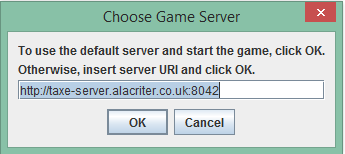
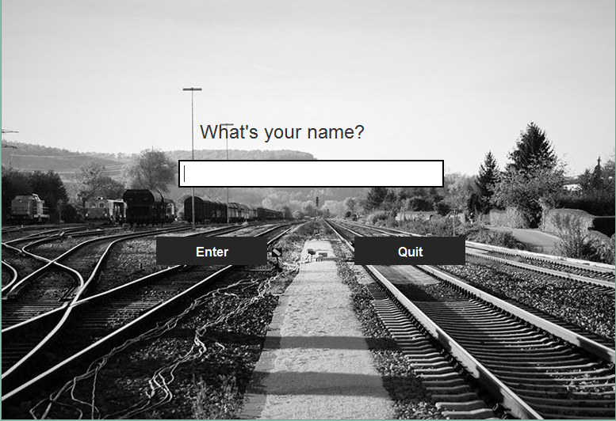
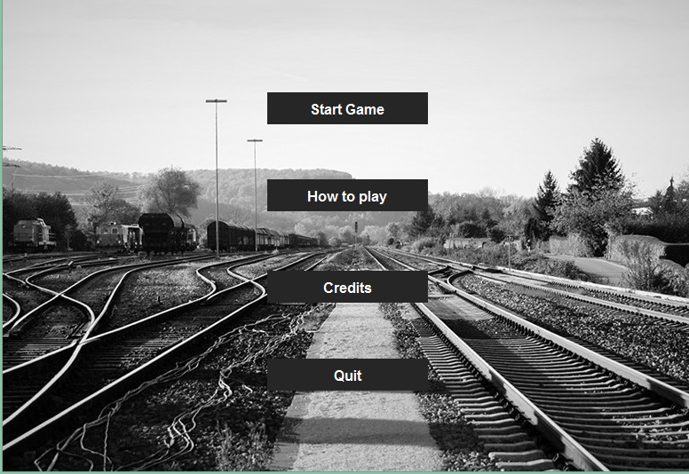
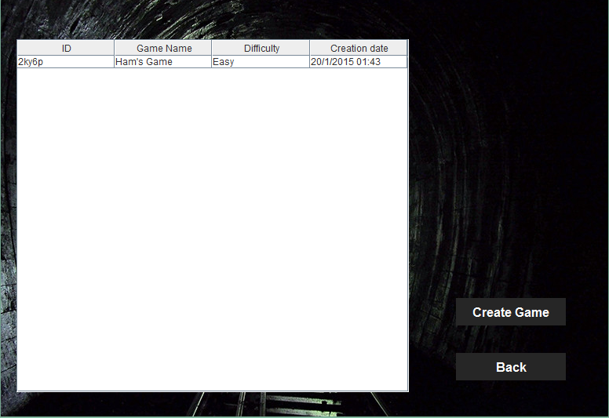
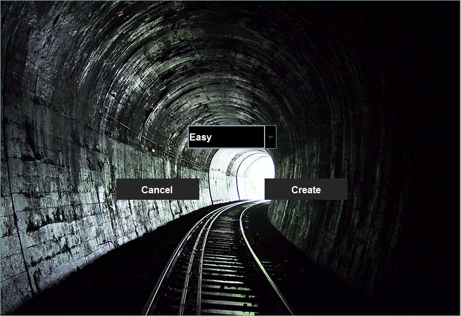
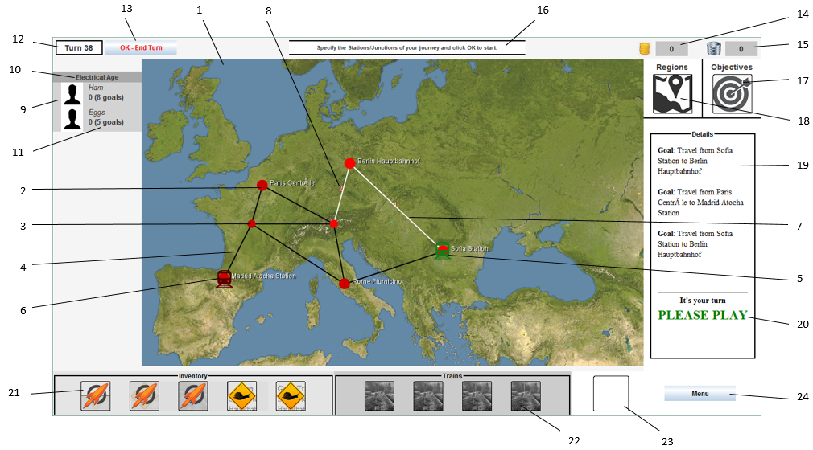
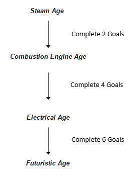

User Manual
Contents
1. System Requirements
2. Getting Started
3. Main Menu
4. The Lobby
5. Creating a Game
6. The Game Screen
7. Playing the Game
1. System Requirements
Operating Systems: Windows Vista, Windows 7, Windows 8, Oracle Linux 5.5+, Oracle Linux 6.x (32-bit), Oracle Linux 6.x (64-bit), Oracle Linux 7.x (64-bit), Ubuntu Linux 10.04 and above, Mac OS X 10.7.3 or later
Disk Space: 204 MB
RAM: 128 MB
Processor: Pentium 2 266 MHz
Java 7 and an Internet Connection Required
2. Getting Started
Download taxe-game.jar from http://sepr-eep.github.io/ and open the application.

When opening the TAXE Game application, you will be asked to select a server. Click on “OK” to use the default server. To use a different server, type in the desired server’s URL before clicking “OK”. Click “Cancel” to terminate the application if you so desire.

You will then be asked to create a username. Type in the desired username and then click “Enter” to continue to the Main Menu. Clicking “Quit” will exit the application.
3. Main Menu

Click “Start Game” to go to the Lobby Screen.
Click “How to Play” to view the User Manual.
Click “Credits” to view the Credits.
Click “Quit” to exit the application.
4. The Lobby

To enter an existing game, find the game in the game list and double click it to join. This will open the Game Screen.
To create a new game, select “Create Game”.
Select “Back” to return to the main menu..
5. Creating a Game
Selecting “Create Game” in the lobby will open the Create Game screen.
Select a difficulty using the drop down menu and click “Create” to create a game.
Click “Cancel” to return to the lobby screen.

6. The Game Screen

- The Game Map - Shows the locations of trains, stations, junctions and tracks.
- Station - The stations the trains can stop at. Goals will require that a train reaches a particular station.
- Junction - Areas where a train can stop, but goals will not require that you reach a junction.
- Track - Connects stations and junctions together.
- Your Train - The position of a train in your possession.
- Opponent’s Train - The position of an opponent’s train.
- Current Journey - The journey currently selected for the selected train.
- Journey Number - Shows the order in which tracks will be traversed in the selected journey.
- Players - The players currently in the game.
- Current Age - The age you are currently in.
- No. of Goals Completed - The number of goals completed by that player.
- Turn Number - The current turn you are on.
- End Turn - Click to end your turn.
- Current Gold - The amount of gold you have in your possession.
- Current Metal - The amount of metal you have in your possession.
- Information - Provides information about the game, including what to do next and the effects of selected items.
- Objectives Tab - Click to make the right panel display goals.
- Regions Tab - Click to make the right panel display information about regions. (Not yet implemented)
- Goal Objectives - Outlines the steps required to complete the current goal.
- Turn Indicator - Tells you whether it is currently your turn or your opponent’s turn.
- Item Inventory - Shows the items you have in your possession. Click on an item to select it. This will open a description of the item and its effects. Click on a train on the map to use the selected item on that train.
- Train Inventory - Shows the trains you have in your possession. Click on a train in the inventory to highlight it on the map. (Not yet implemented)
- Store - Click to open the store menu, where you can buy new trains and items. (Not yet implemented)
- Menu - Opens the game menu. (Not yet implemented)
7. Playing The Game
The goal of the game is to complete goals whilst simultaneously hindering your opponent’s progress.
The game uses a turn based structure. A single turn is structured in the following manner:
Player 1 takes turn → Player 2 takes turn → Trains are moved
This is then repeated for the duration of the game.
During their turn, a player can:
- Move each of their trains in order to complete goals.
- Use items on their own trains to make them faster.
- Use items on their opponent’s trains to slow them down.
- View goal details
Moving the Train:
- Click the train you want to move. This highlights the train.
- Click on an adjacent (i.e. connected by a line) station/junction you want to move the train to. This will highlight the track leading to that station and add the station/junction to your journey. You can add multiple stations/junctions to your journey and the map will provide numbers to show the order in which the train will traverse the tracks.
- Click “OK - End Turn” to move the train.
If the train is already on a set journey, clicking “”OK - End Turn” will make the train continue the previously chosen journey.
Using Items:
There are two kinds of items in the game: items which speed up your trains and items which can slow down your opponents train. You will randomly receive 2 items at the start of each turn up to a total of 5 items in your inventory. To use an item:
- Click on the item you wish to use to select it. This will provide information about the item at the top of the screen, giving you the item’s name and the effect the item has.
- Click on the train you wish to use the item on. Use the speed increase items on your own trains, and the speed decrease on your opponents.
Don’t worry, the game won’t allow you to use the items on the wrong trains!
View Goal Details:
- The panel on the right gives details of the current goals available to you. The goals involve travelling between 2 specified stations.
- You receive a new randomly selected goal each turn up to a total of 3 active goals. You can complete them in any order you wish!
Completing Goals and Advancing Age:
When a player has reached a certain number of goals, they will advance an age. This gives them faster trains and allows access to better items. The order of Age Advancement is:
